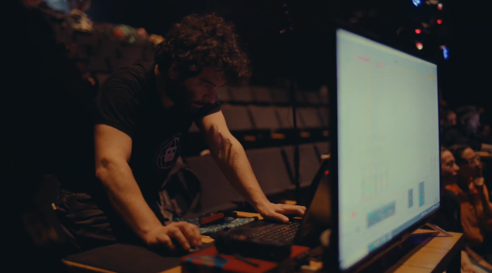

Cargando trabajos…

Técnico electrónico e investigador autodidacta enfocado en el punto de encuentro entre ciencia, tecnología y arte. Con amplia experiencia en el ámbito audiovisual e instalaciones interactivas (teatro, sonido, video, iluminación y publicidad BTL), actualmente desempeñándose en investigación y desarrollo para la industria biotecnológica. Su trabajo abarca desde el desarrollo técnico, la automatización, el Project Management y el prototipado rápido, hasta la docencia y el dictado de talleres y workshops.
↓Cargando trabajos…
Ingeniero electrónico y tecnólogo creativo que trabaja en la intersección entre arte, ciencia y tecnología. Con más de 15 años de experiencia, desarrolla sistemas electrónicos, audiovisuales e interactivos en contextos artísticos, culturales y científicos.
Desde 2007 trabaja de forma independiente en el campo multimedia, creando instalaciones interactivas, entornos escénicos, interfaces experimentales y sistemas tecnológicos a medida para artistas, instituciones y eventos públicos de gran escala. Su práctica se apoya en la electrónica, los sistemas embebidos, las tecnologías de sonido y video y la interacción en tiempo real, desarrollada con un enfoque investigativo y práctico.
Actualmente, Martín trabaja en la industria biotecnológica, donde lidera el desarrollo de sistemas tecnológicos innovadores. Su trabajo se centra en electrónica, automatización e ingeniería de sistemas, integrando investigación científica, diseño de ingeniería y colaboración interdisciplinaria.
A lo largo de su carrera se formó en artes electrónicas, diseño y tecnologías del sonido, construyendo una práctica multidisciplinaria que une el rigor técnico con la exploración artística.
Electronic engineer and creative technologist working at the intersection of art, science, and technology. With over 15 years of experience, he develops electronic, audiovisual, and interactive systems across artistic, cultural, and scientific contexts.
Since 2007, he has worked independently in the multimedia field, creating interactive installations, stage environments, experimental interfaces, and custom technological systems for artists, institutions, and large-scale public events. His practice is grounded in electronics, embedded systems, sound and video technologies, and real-time interaction, developed through a research-driven and hands-on approach.
Currently, Martín works in the biotechnology industry, where he leads the development of innovative technological systems. His work focuses on electronics, automation, and systems engineering, integrating scientific research, engineering design, and interdisciplinary collaboration.
Throughout his career, he has studied and trained in electronic arts, design, and sound technologies, shaping a multidisciplinary practice that bridges technical rigor and artistic exploration.
© 2026 Martín Pilu